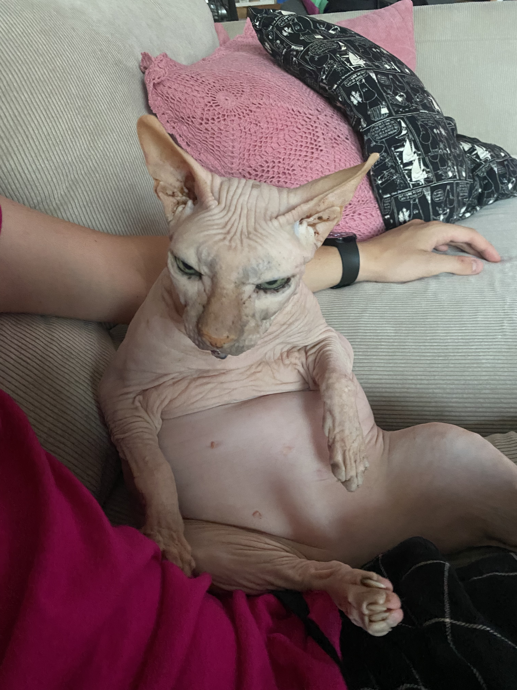

See on minu kass Jossu, ta on 14 aastane sfinksi tõugu kass ehk karvutu kass.
Minu kassi nimi on Jossu, ta on puhast tõugu isane sphinx, kes on 14 aastane.
Ta on väga kortsuline ja paks, tal ei ole karva, aga tema naha värv on beež.
Jossu on üldiselt väga rahulik ja sõbralik kass, aga ta ei arvesta teiste vajadustega, kuna tihtilugu magades ta arvab, et temal on rohkem ruumi vaja kui inimesel, kes parasjagu tema kõrval magab.
Ainuke asi, mida Jossu on nõus sööma, on Royal Canin-i brändi sphynx-idele mõeldud kassi toitu. Me oleme teisi brände proovinud, aga see on ainuke, mis temale sobib.
Ta lemmik tegevused on magamine, oma tagumiku liputamine ja vaiba kraapimine.
Jossu puhul kõige imelikum asi on see, et kui ta vetsus käib, mis on tavaliselt kell 3 öösel, siis kui kõik magavad, ta on seal kaua aega.
Keskmiselt ta kraabib oma liiva 8 minutit iga kord, kui ta öösel käib, mis äratab kõik korteris olevad inimesed üles.